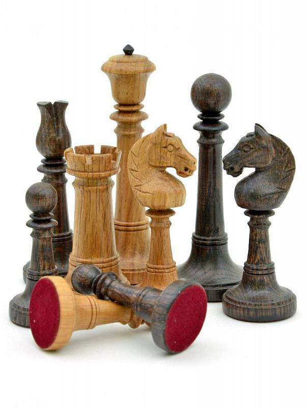

ШАХМАТНЫЙ КЛУБ «СТРАТЕГИЯ»

Шахматы появились полторы тысячи лет назад и до сих пор остаются одной из самых узнаваемых игр во всем мире.Когда-то фигуры на клетчатой доске двигали восточные мудрецы, затем в Европе проводили престижные закрытые турниры, а сейчас дети из разных стран ходят в шахматные кружки, пока их родители смотрят фильмы об известных гроссмейстерах. За эти годы я не только убедилась, что шахматы — это самый настоящий спорт, но и разглядела в них другие, не менее важные стороны. На этом сайте я расскажу, как разобраться в правилах и принципах игры, где можно оттачивать свое мастерство и для чего вообще стоит познакомиться с шахматами.